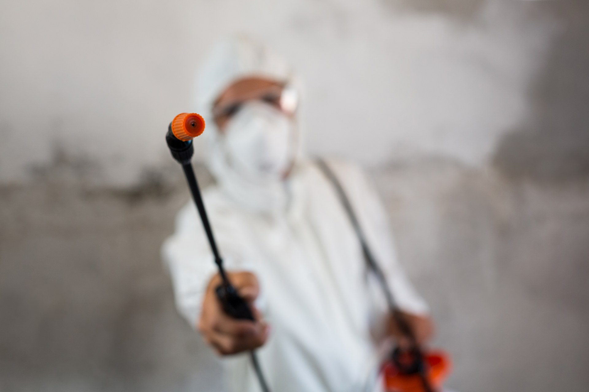
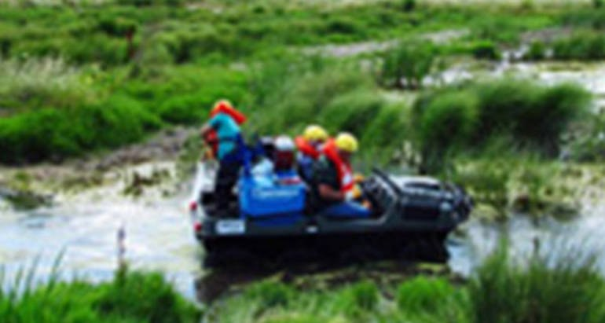
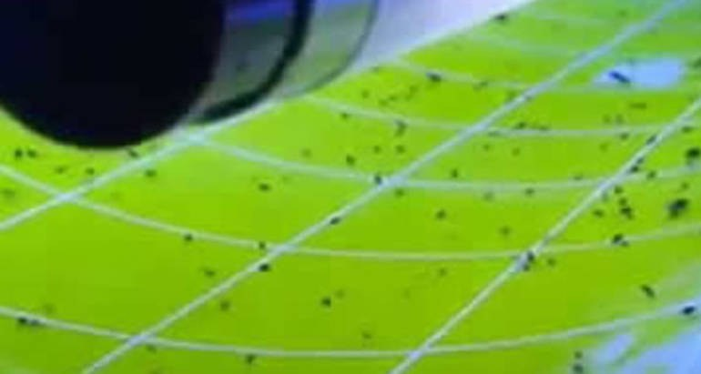
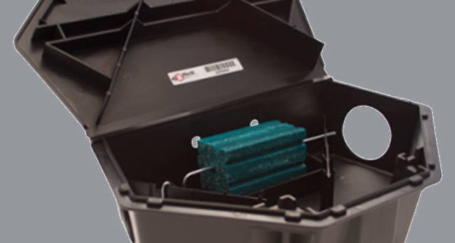

Çevre dostu ilaçlama
Uygulama alanına uygun yöntemlerle, çevre güvenliğini gözeten çözümler.


Muğla’da yaşam ve çalışma alanlarınız için
profesyonel ilaçlama ve haşere kontrolü.
Profesyonel mücadele ve kesin çözümler için
Bizi arayın · 0252 213 0 999 ↗Uygulama alanına uygun yöntemlerle, çevre güvenliğini gözeten çözümler.
Uygulama ve güvenlik eğitimleriyle desteklenen profesyonel ekip.
İhtiyacınıza uygun uygulamalar ve düzenli takip.
Alan değerlendirmesinden uygulamaya, izlenebilir mücadele programı.
MUĞLA DELTA İLAÇLAMA
2008 yılında kurulan firmamız, Muğla’da halk sağlığı alanında haşere ilaçlama hizmetleri sunmaktadır.
Bizi yakından tanıyın ↗MÜCADELE YÖNTEMLERİMİZ


